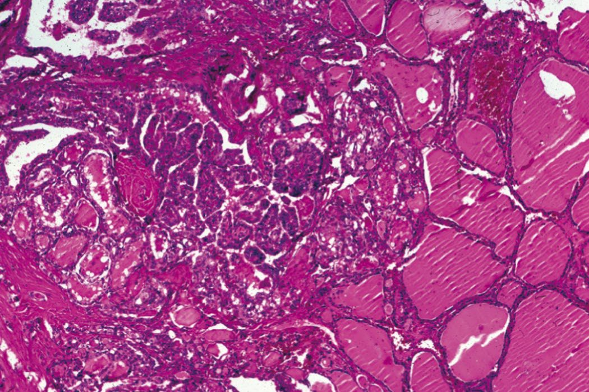
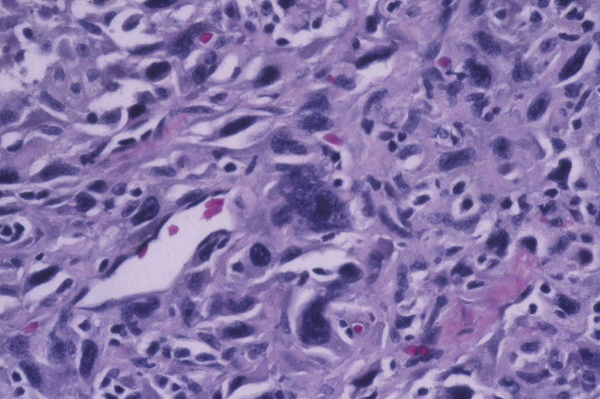
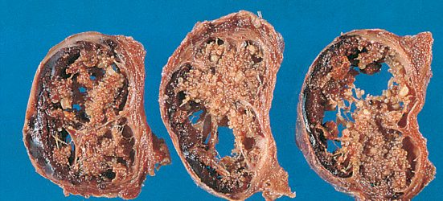
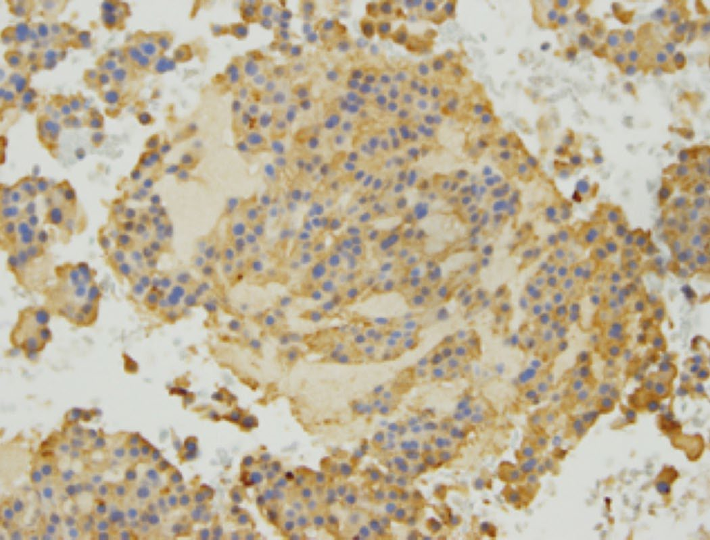

Thyroid Cancer
Summary
- Thyroid cancer is rare, accounting for about 1% of new malignancies, but its incidence is rising because of increased detection of small papillary tumours on imaging [1][2].
- Differentiated thyroid cancer (papillary and follicular) comprises the great majority of cases and carries an excellent prognosis, whereas medullary, poorly differentiated and anaplastic thyroid cancers are progressively more aggressive [1][2].
- Diagnosis relies on ultrasound risk stratification and FNAC, and treatment is primarily surgical (lobectomy or total thyroidectomy) with selective use of radioactive iodine [2][3].
Definition
Thyroid cancer comprises malignant neoplasms arising from thyroid follicular epithelium (papillary, follicular, oncocytic/Hürthle cell, poorly differentiated and anaplastic carcinoma) or from parafollicular C cells (medullary thyroid cancer), as well as rare primary thyroid lymphoma and metastases to the thyroid (most commonly from renal cell carcinoma) [2][3]. Differentiated thyroid cancer (DTC) comprises papillary thyroid carcinoma (PTC, 85%) and follicular thyroid carcinoma (FTC, 15%) [1].
Pathophysiology
- The most important identifiable aetiological factor in differentiated thyroid carcinoma, particularly papillary, is irradiation of the thyroid under 5 years of age; in Gomel, Ukraine, childhood thyroid cancer incidence rose from <1 to 96 per million following the Chernobyl disaster [2].
- Short-latency aggressive PTC is associated with the ret/PTC3 oncogene, while later-developing, possibly less aggressive tumours are associated with ret/PTC1 [2].
- Genetic mutations associated with DTC include BRAF, RAS and TERT; high-risk prognostic factors include age >45, male gender, high-risk cell type, local invasion and high-risk mutations such as p53 and TERT [1].
- PTC shows characteristic cytological features including nuclear grooves, intranuclear inclusions and optically clear nuclei ('Orphan Annie cells'), and psammoma bodies on histology, with lymphatic spread as the predominant pattern [1][4].
- Follicular carcinoma shows variable degrees of capsular and vascular invasion, minimally invasive tumours invade the capsule only, while widely invasive variants invade local structures and spread haematogenously (most commonly to bone) [1][4].
- Follicular carcinoma can only be distinguished from follicular adenoma by histological architecture (capsular/vascular invasion), not by FNA cytology [2].
- Hürthle (oncocytic) cell tumours are a rare follicular variant in which oxyphil cells predominate and carry a poorer prognosis; most Hürthle cell lesions are benign adenomas, and malignant versus benign cannot be determined on biopsy alone [2][4].
- Medullary thyroid cancer (MTC) arises from parafollicular C cells of neural crest origin, secretes calcitonin and CEA, and shows amyloid deposition and characteristic 'cell balls' on histology; C-cell hyperplasia is considered premalignant [2][4].
- Anaplastic thyroid cancer (ATC) is linked to loss of the p53 tumour suppressor gene, shows squamoid, spindle cell or giant cell histology, and at least 50% arise from pre-existing DTC [1].


Clinical features
- The commonest presentation is an asymptomatic thyroid nodule; clinical nodules are present in 75% of women and 1% of men, and the risk of malignancy in a thyroid nodule is 7–15% [1].
- Extremes of age (<16 or >70 years) are risk factors for cancer, and children typically present with more advanced disease; other malignant features include voice change, cervical lymphadenopathy and a rapidly enlarging goitre [1].
- Enlarged cervical lymph nodes may be the presentation of PTC, and RLN paralysis is very suggestive of locally advanced disease [2].
- Anaplastic cancers are usually hard, irregular and infiltrating; differentiated carcinoma may be suspiciously firm and irregular but is often indistinguishable from a benign swelling, and small papillary tumours may be impalpable even with lymphatic metastases present [2].
- Pain, often referred to the ear, suggests nerve involvement by infiltrating tumour [2].
- MTC in sporadic cases often presents in the fourth or fifth decade with a thyroid mass; up to 50% have cervical lymphadenopathy at presentation, and others present with diarrhoea (from hypercalcitoninaemia), flushing, or bone pain; metastatic disease (liver, lungs, bone) is present in 20% at diagnosis [1].
- Diarrhoea occurs in about 30% of MTC cases, possibly due to 5-hydroxytryptamine or prostaglandins from tumour cells [2].
- ATC typically presents in elderly women (>70 years) with a rapidly enlarging neck mass, dysphagia, hoarse voice, stridor, lymph node mass, weight loss or anorexia [1].

Etiology
- Most thyroid cancers have no identifiable aetiological factor [2].
- Childhood neck irradiation is the strongest identified risk factor for papillary carcinoma [2][5].
- The incidence of follicular carcinoma is higher in endemic goitrous areas, possibly due to chronic TSH stimulation [2].
- Malignant lymphoma may develop against a background of autoimmune (Hashimoto) thyroiditis [2].
- MTC is sporadic in about 75–80% of cases and familial in 20–25%, occurring as part of multiple endocrine neoplasia type 2A (MEN2A, with phaeochromocytoma and hyperparathyroidism) or MEN2B (with mucosal neuromas, marfanoid habitus); germline RET proto-oncogene mutations underlie MEN2A, MEN2B, familial MTC (FMTC), and are also implicated in Hirschsprung disease [2][4][5].
Diagnosis
- Clinical history and examination, including radiation exposure and family history, central neck/regional lymphatic examination, and vocal cord function assessment, remain the cornerstone of diagnosis, followed by thyroid function tests and ultrasonography [2].
- Ultrasound characterises nodules as benign, indeterminate or malignant; benign lesions need no further assessment unless surgery is considered for compressive symptoms, while indeterminate/malignant lesions require FNAC [2].
- FNAC is highly sensitive for thyroid cancer in experienced hands, and ultrasound guidance improves diagnostic yield; reporting uses the Royal College of Pathologists' Thy system (UK) or the Bethesda System (USA) [1].
- Genetic sequencing/molecular tests on FNA specimens provide additional information on malignant potential of indeterminate nodules [1].
- Contrast-enhanced cross-sectional imaging (neck and chest) is used for widespread nodal disease or suspected airway/mediastinal invasion [2].
- A rapidly growing, solid, fixed thyroid mass raises suspicion of anaplastic carcinoma, which can be difficult to distinguish from thyroid lymphoma or thyroiditis; core or open biopsy may be required for a confident diagnosis given the urgency of accurate distinction [2].
- For MTC, FNAC may show spindle-shaped cells with pleomorphic nuclei, dense chromatin and eosinophilic cytoplasm, with immunohistochemistry positive for calcitonin ± CEA; serum calcitonin and CEA are tumour markers, genetic/RET mutation analysis should be performed, and urinary/plasma metanephrines and serum calcium should be checked in all MTC patients to exclude phaeochromocytoma (occurring in up to 50% of MEN2/3 patients) and hyperparathyroidism [1].
- Preoperative serum calcitonin >400 pg/mL should prompt an active search for distant MTC disease [1].
- Thyroglobulin (Tg) is a sensitive postoperative biomarker for DTC recurrence after total thyroidectomy, but its accuracy depends on the absence of thyroglobulin antibodies (TgAb), present in 10–15% of the general population [3].
- A stimulated Tg of more than 1–2 ng/mL after TSH stimulation is considered higher risk for persistent/recurrent disease [3].

Scoring and Severity
- TNM staging remains the best predictor of survival in DTC; MACIS (Metastases, Age, Completeness of resection, Invasion, Size) and AMES (Age, Metastases, Extent, Size) are prognostic scoring systems used in some specialist centres [1].
- Under the AJCC system, all patients under 55 years are staged I unless they have distant metastases (stage II); older patients with T1N0M0 disease are stage I, T2N0M0 or nodal disease is stage II, and locally invasive primary disease (T4) or distant metastases make older patients stage IV [2].
- A risk-stratification system predicts individual survival: a young patient with a low-risk tumour has an almost-zero risk of death after treatment, whereas an older patient with a high-risk tumour (extrathyroid extension or distant metastases) has up to 55% risk of death at 5 years; older patients with low-risk tumours and younger patients with high-risk tumours form an intermediate-risk group [2].
- In younger patients, nodal metastases predict recurrence but not death (because recurrent neck disease can almost always be salvaged), whereas in older patients neck metastases (particularly lateral) are a marker of distant disease and carry a negative prognostic implication for both recurrence and death [2].
- Risk factors for thyroid cancer recurrence/metastases are summarised by the mnemonic X-GAMES: previous XRT, high Grade, Age (<20 or >50), Male sex, Extrathyroidal disease, and Size (>1 cm) [4].
- Serum calcitonin doubling time <12 months in MTC indicates a worse prognosis [1].
- The Weiss scoring system is used post-operatively for adrenocortical carcinoma, not thyroid cancer (see Adrenal Tumors page) [1].
Treatment and Management
- For DTC, low-risk patients with a single focus of disease confined to the thyroid can be offered thyroid lobectomy, protecting the contralateral RLN and parathyroids; high-risk patients with nodal or distant metastases require total thyroidectomy to eradicate disease and prepare for radioactive iodine [2].
- Indications for total thyroidectomy include tumour >1 cm, extrathyroidal disease (beyond the capsule, clinically positive nodes, or metastases), multicentric/bilateral lesions, and previous irradiation; the vast majority of US patients receive total thyroidectomy [4].
- Hemithyroidectomy is appropriate for diagnostic purposes in indeterminate (Thy3a) or follicular (Thy3f) lesions and for suspicious (Thy4) lesions, and is also an acceptable approach for small unifocal Thy5 tumours <2 cm (possibly <4 cm) without high-risk features; clinical/radiological observation may be used for micropapillary carcinoma (<1 cm) without high-risk features [1].
- Total thyroidectomy is the procedure of choice for larger tumours or those with intermediate-to-high-risk recurrence factors [1].
- All thyroid cancer patients should be managed by a designated thyroid cancer MDT [1].
- An active-surveillance approach (pioneered in Japan) may be offered for PTC <1 cm in low-risk patients diagnosed incidentally, as only about 30% develop growth requiring intervention [2].
- Suppressive doses of levothyroxine are used post-operatively to reduce TSH stimulation of residual malignant cells in high-risk patients, while low-risk patients may receive physiological replacement, balancing benefit against risks of arrhythmia and osteoporosis from long-term TSH suppression [1][2].
- Radioactive iodine (RAI) ablation is used for patients with recurrence risk factors, requires prior total thyroidectomy to be effective (as normal thyroid tissue otherwise absorbs the isotope preferentially), needs high TSH levels (achieved via thyroid hormone withdrawal or recombinant human TSH), and thyroxine replacement should not begin until after RAI treatment [1][2][4].
- RAI is effective only for papillary and follicular thyroid cancer (not MTC, anaplastic, or Hürthle cell), can cure bone and lung metastases, and is avoided in children, pregnancy, and lactation; rare side effects include sialoadenitis, GI symptoms, infertility, bone marrow suppression, parathyroid dysfunction and leukaemia [4].
- Tumours losing iodine avidity with recurrence or age are termed radioiodine-refractory and may be considered for external beam radiotherapy [2].
- MTC treatment requires total thyroidectomy with central (level VI) lymph node dissection as a minimum, since central compartment metastases occur in up to 80%; selective lateral neck dissection is guided by radiological/clinical evidence of disease [1][4].
- Prophylactic thyroidectomy in RET-positive individuals is timed by codon-specific risk: level A codons before age 10 (or later if low-risk criteria met), level B before age 5, level C before age 5, and level D (highest risk, e.g.
- MEN2B codon 918) within the first year of life [1][4].
- Phaeochromocytoma must be excluded/treated before thyroid surgery in MTC/MEN patients [1].
- ATC management is generally palliative given dismal prognosis, though total thyroidectomy with selective resection may be attempted in the rare resectable case; palliative surgery (including tracheostomy) may be needed for airway symptoms, with external beam radiotherapy as adjuvant or palliative treatment and limited chemotherapy role [1][2].
- Thyroid lymphoma is managed with chemoradiotherapy; there is little or no role for surgery once the diagnosis is established by biopsy, and response to irradiation is dramatic [1][2].
Surgeries
- Surgery for papillary and follicular thyroid cancer generally starts with lobectomy, converting to total thyroidectomy according to the risk criteria above [4].
- When metastatic nodal disease is present, a therapeutic compartment-oriented neck dissection (central or lateral) is performed; elective (prophylactic) lateral neck dissection has largely been abandoned given its morbidity and the low rate of progression from occult metastases, whereas elective central neck dissection remains used selectively in patients at highest risk of occult central disease (e.g. extrathyroidal extension) [2].
- Modified radical neck dissection (MRND) is indicated for extrathyroidal disease or clinically positive nodes; an enlarged lateral neck node containing thyroid tissue (lateral aberrant thyroid, i.e. nodal metastasis from PTC) is treated with total thyroidectomy, MRND and RAI [4].
- For MTC, MRND is added for a palpable thyroid mass or clinically positive nodes, and bilateral MRND if both lobes are involved or extrathyroidal disease is present [4].
- Isthmusectomy is the most appropriate biopsy technique for thyroid lymphoma causing tracheal compression, though rarely necessary given the rapid response to radiotherapy [2].
- Total thyroidectomy for an otherwise healthy patient with a 2 cm follicular thyroid cancer diagnosed on FNAB is the recommended treatment, particularly in younger patients, with prophylactic neck dissection reserved for suspected nodal involvement [5].
Complications
- Post-operative haematoma/haemorrhage can compress the airway and requires bedside wound opening and evacuation, with return to theatre for exploration; this is a leading cause of immediate reoperation after thyroid surgery [5].
- Bilateral vocal cord dysfunction with airway compromise requires reintubation and may need tracheostomy [5].
- Inadvertent injury or devascularisation of the parathyroid glands causes hypocalcaemia with acute neuromuscular excitability, managed with intravenous calcium [5].
- Total thyroidectomy without adequate thyroid hormone replacement, particularly in children, can result in myxoedema with cretinous features [5].
Prognosis
- Overall mortality from thyroid cancer remains low (over 80% 5-year survival across all groups) despite rising incidence, because most of the increase reflects detection of previously occult, indolent disease [2].
- PTC has a 95% 5-year survival rate, with death usually secondary to local disease; distant metastases are uncommon [2][4].
- Up to 30% of patients dying of non-thyroid disease are found to have occult PTC deposits at autopsy [2].
- FTC is more aggressive than PTC, with about 50% having metastatic disease (haematogenous, most often to bone) at presentation, and a 70% 5-year survival rate dependent on stage; overall FTC mortality is about twice that of PTC [2][4].
- Overall 10-year survival for PTC approaches 95%, and for FTC exceeds 85% in experienced centres [1].
- Hürthle cell carcinoma carries a poor prognosis relative to other follicular tumours [2].
- MTC has a 50% 5-year survival overall, with prognosis dependent on regional/distant metastases; any nodal involvement virtually eliminates the prospect of cure, though the disease course can be indolent with long survival even without cure [2][4].
- Reported 10-year MTC survival ranges from 56% to 96%, exceeding 95% when biochemical cure is achieved [1].
- ATC is one of the most aggressive human malignancies, with 0% 5-year survival and median survival of 7 months for localised disease and 3 months with metastases; it accounts for <2% of thyroid cancers but over 50% of thyroid cancer deaths [1][4].
- Thyroid lymphoma carries a good prognosis, particularly without cervical lymph node involvement, though prognosis is worse if part of widespread lymphoma [2].
References
- Oxford Handbook of Clinical Surgery, 5th ed., Ch. 7; see *Thyroid Nodules and Goitre* page for full classification detail
- Bailey & Love's Short Practice of Surgery, 28th ed., Ch. 55
- Sabiston Textbook of Surgery, 22nd ed., Ch. 73
- The ABSITE Review, 2022, Thyroid chapter
- Schwartz's Principles of Surgery: ABSITE and Board Review, Ch. 38